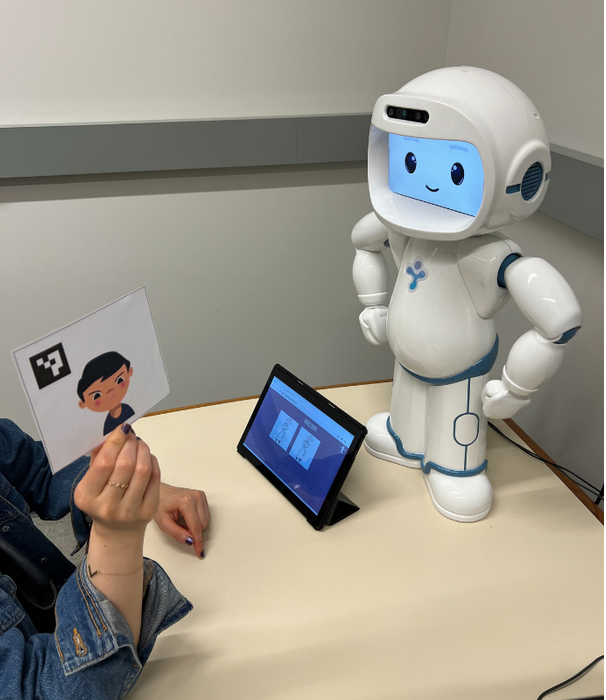

Co-design & field study
A therapy robot in a real clinic, with no researchers present
We built a robot and tablet dashboard that a speech-language therapist could operate during regular pediatric sessions. Then we studied how it fit into practice.
My role · Project lead

Designing a robot therapists could run
During co-design, two speech-language therapists helped identify what the system needed to do in a session. They needed immediate control over the robot, clear robot speech, activities that fit familiar routines, age-appropriate difficulty, and enough variety for repeated use.
We built a tablet dashboard so the therapist could select robot activities and control the robot interactions immediately during sessions.
What happened in the clinic
Each child had seven sessions; a therapist operated the robot independently with no researchers on site.
The therapist reported that the robot could help children refocus, calm down, and stay engaged.
Deployment clips
Research
Field deployment study · Advanced Robotics, 2026
Co-design and personas study · IEEE RO-MAN, 2025